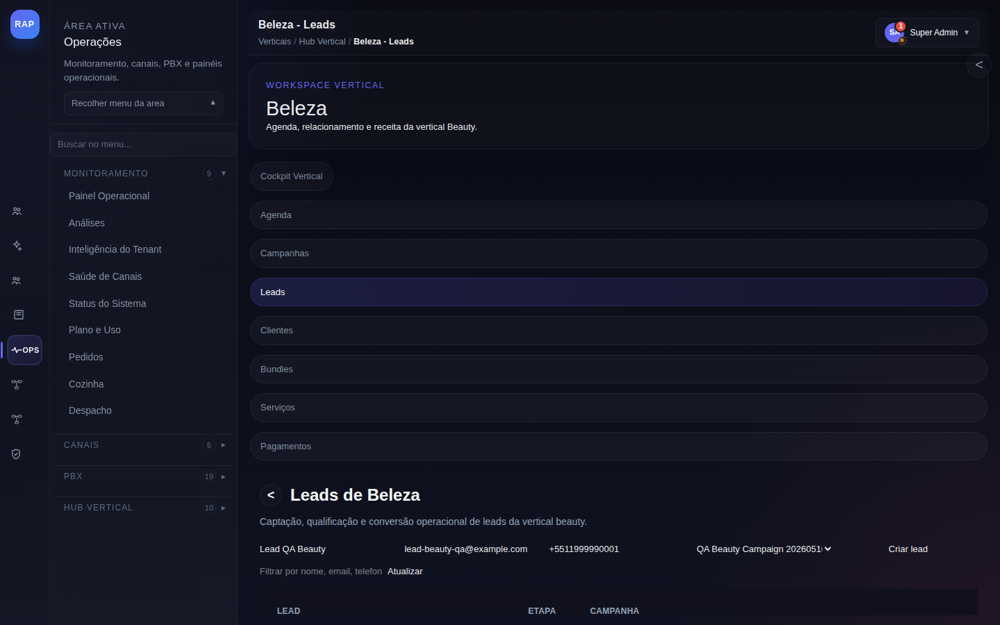
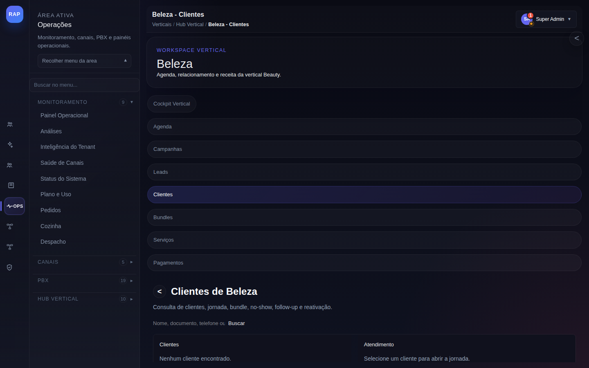
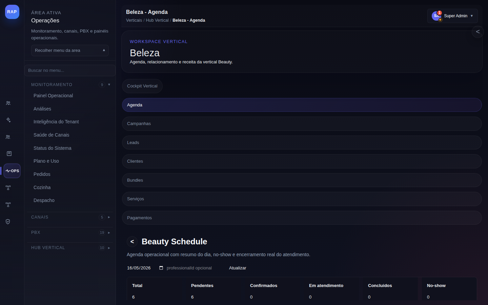
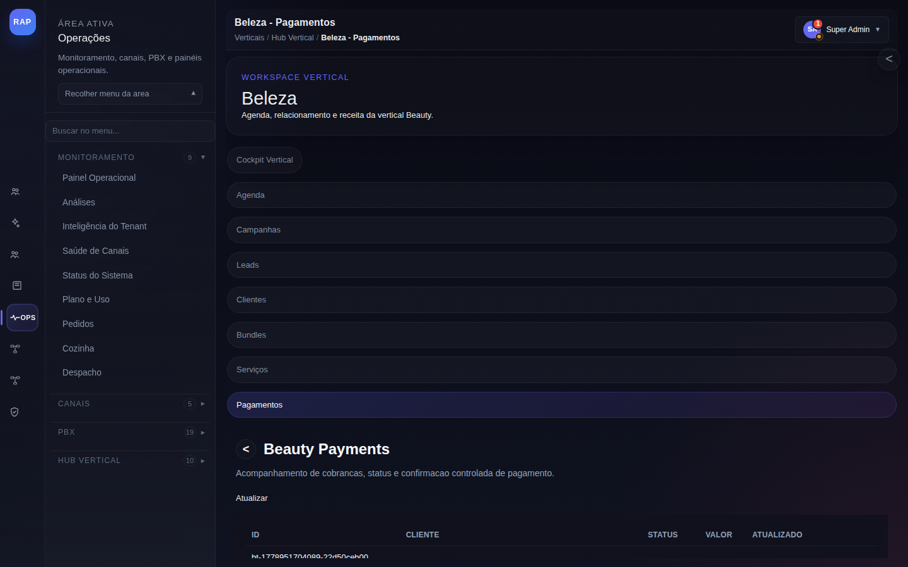
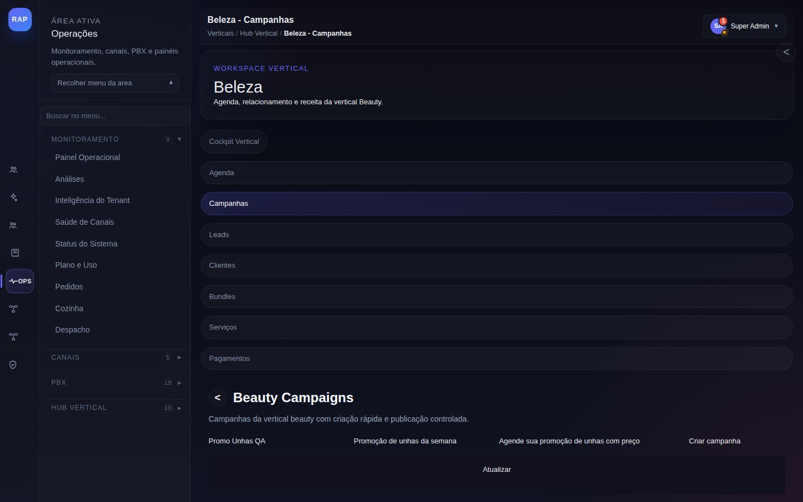
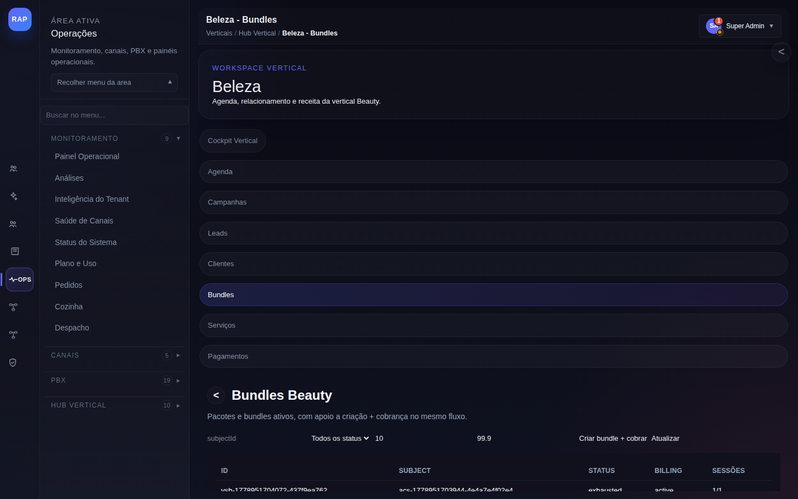

Fluxos passo a passo com anotações visuais de cada tela. Para salões, spas, barbearias e clínicas de estética.
Da primeira interação via WhatsApp até o cliente agendado e convertido. Cobre campanha de disparo, qualificação de lead e criação do agendamento.
Lead chega via campanha de WhatsApp, indicação ou formulário digital. O sistema cria automaticamente um registro na tela Leads de Beleza com status "Em análise". O atendente qualifica e converte.

Menu lateral da vertical Beauty com todas as telas: Agenda, Campanhas, Leads (ativa), Clientes, Bundles, Serviços e Pagamentos. Clique para navegar entre módulos sem perder o contexto da vertical.
Cabeçalho da tela com subtítulo "Captação, qualificação e conversão operacional de leads do vertical Beauty". Indica claramente o propósito da tela e o contexto do módulo.
Cada linha representa um lead capturado: nome, email mascarado, telefone e status atual (ex.: "Análise"). Clique na linha para abrir o painel de detalhes e iniciar a qualificação.
Campo "QA Beauty Campaign" identifica qual campanha de disparo gerou o lead. Essencial para medir o ROI de cada ação de marketing e ajustar futuras campanhas.
Botão "Criar lead" para registrar prospects que chegam por telefone, indicação ou presencialmente. O lead entra no mesmo funil de qualificação que os automatizados.
Ordene os leads pela coluna "Criado em" para priorizar os mais recentes. Leads respondidos em menos de 5 minutos têm taxa de conversão até 21× maior. Configure uma automação de resposta imediata no módulo de Fluxos.
Emails e telefones são exibidos mascarados por padrão (ex: jo••@••ail.com). Agentes com permissão agents:unmask_pii podem revelar os dados completos. Não compartilhe leads não anonimizados fora do sistema.

A aba Clientes no menu lateral Beauty fica destacada indicando o módulo ativo. Permite navegar instantaneamente para Leads, Agenda ou Pagamentos sem perder contexto.
Subtítulo: "Consulta de clientes, jornada, bundles, churn, follow-up e retenção." — indica todas as dimensões de análise disponíveis para cada cliente da base.
Busque por nome, documento ou telefone. Filtre por status de jornada (ativo, em risco de churn, inativo). Combine filtros para segmentar campanhas de retenção.
"Selecione um cliente para abrir a visão da jornada." — ao clicar em um cliente, o painel lateral abre com histórico completo: serviços realizados, bundles ativos e próximas ações sugeridas.
Lead capturado → qualificado → convertido em cliente → primeiro agendamento criado. Taxa de conversão média para Beauty: 34% quando o follow-up ocorre em menos de 2 horas.
Do agendamento confirmado ao pagamento recebido. Cobre check-in, execução do serviço, registro de pagamento e follow-up pós-atendimento.
Cliente com agendamento confirmado chega para o atendimento. O profissional faz o check-in na agenda, executa o serviço e registra o pagamento. Sistema dispara follow-up automático após conclusão.

Primeira aba do menu vertical Beauty. Ponto de controle diário da operação. Atualiza em tempo real via WebSocket quando novos agendamentos chegam ou status muda.
"Agenda operacional com resumo do dia" — visão de todos os agendamentos do dia ordenados por horário. Ideal para o profissional conferir sua agenda matinal e se preparar.
Seletor de data no formato dd/MM/yyyy. Clique na seta para avançar ou recuar dias. Use para planejar a semana ou consultar atendimentos passados para relatório.
Força um refresh dos dados da agenda sem recarregar a página. Útil quando outro atendente acabou de criar um novo agendamento e você quer ver sem esperar o WebSocket.
Pendente → aguardando confirmação. Confirmado → cliente confirmou. Em andamento → check-in feito, serviço em curso. Concluído → finalizado. No show → não compareceu.
Número de agendamentos em cada status no dia selecionado. Permite ao supervisor visualizar instantaneamente a carga de trabalho e identificar gargalos operacionais.
Para fazer o check-in: (1) localize o agendamento na coluna "Confirmado", (2) clique no card, (3) selecione "Iniciar atendimento" no painel lateral. O status muda para "Em andamento" e o timer começa. Ao concluir, o pagamento é solicitado automaticamente.

Última aba do menu Beauty. Centraliza todas as cobranças — tanto de sessões avulsas quanto de parcelas de bundles. Manter atualizado é crítico para o fechamento de caixa diário.
"Acompanhamento de cobranças, datas e confirmações (controle de agendamento)." — o sistema vincula cada pagamento ao agendamento de origem, criando rastreabilidade completa.
Explica que os pagamentos listados são vinculados a agendamentos. Ao clicar em um registro, você vê o serviço prestado, o profissional responsável e o histórico de tentativas de cobrança.
Sincroniza com o gateway de pagamento para verificar confirmações pendentes. Útil após um PIX ser enviado — o status muda de "Aguardando" para "Confirmado" em segundos.
CLIENTE — quem pagou. STATUS — Confirmado / Aguardando / Falhou. VALOR — valor cobrado. AGENDADO — data original do serviço. Ordene por status para priorizar pendências.
Agendamento → check-in → serviço executado → pagamento registrado → follow-up automático disparado. O cliente recebe uma mensagem de agradecimento e um link para avaliar o atendimento via NPS no WhatsApp.
Reativação de clientes inativos com campanhas personalizadas via WhatsApp. Do segmento de inativos ao agendamento gerado pela campanha.
Sistema identifica clientes sem agendamento há 30+ dias ou com score de churn acima de 70. Uma automação cria o segmento de reativação e enfileira para a próxima campanha de disparo programada.

Segunda aba do menu vertical Beauty. Concentra todas as campanhas de marketing do segmento: promoções, sazonalidade e retenção. Diferente das campanhas gerais de /bulk-messaging.
"Campanhas da vertical Beauty com criação rápida e publicação controlada." — as campanhas criadas aqui são específicas para a vertical e carregam contexto de serviço, profissional e sazonalidade Beauty.
Abre o wizard de criação com 4 etapas: (1) nome e objetivo, (2) template WhatsApp, (3) público-alvo, (4) agendamento. Cada etapa valida os campos antes de avançar.
Tipo de campanha para promoções de uso único: cliente recebe oferta personalizada que expira em X horas. Ideal para reativar clientes que não responderam ao lembrete padrão.
Campanha recorrente para preencher horários de baixa demanda (ex.: terça e quarta). Desconto automático em horários previamente configurados como "vitras" na agenda.
Campanha com validade definida: o cliente recebe um link de agendamento com desconto que expira em data específica (ex.: "Agende até domingo"). Cria urgência real.
Recarrega o status das campanhas em execução. Use após disparar uma campanha para verificar as primeiras métricas de entrega, abertura e cliques nos primeiros 15 minutos.
Templates de WhatsApp utilizados nas campanhas precisam ser aprovados pela Meta (24–48h). Crie e submeta o template em /whatsapp-templates antes de criar a campanha. Campanhas com templates não aprovados ficam em estado "Pendente" e não disparam.
Para clientes do segmento Beauty, os horários de maior abertura são: terças e quartas entre 10h-11h e sextas entre 17h-18h. Configure o agendamento da campanha para esses slots para maximizar a taxa de conversão.
Venda de pacotes de múltiplas sessões com controle de consumo e renovação automática.
Cliente demonstra interesse em pacote de serviços durante atendimento (ex.: "10 sessões de depilação a laser"). O profissional abre o módulo de Bundles, compõe o pacote e registra o pagamento na mesma sessão.

Quinta aba do menu vertical Beauty. Exibe todos os pacotes ativos e histórico de consumo por cliente. O indicador numérico na aba mostra quantos bundles estão próximos do vencimento.
Tela central de gestão de pacotes: criação, acompanhamento de sessões utilizadas vs. contratadas, validade e renovação. Conecta diretamente com Pagamentos e Agenda.
Wizard em 3 etapas: (1) selecionar cliente da base Beauty, (2) escolher serviço(s) e quantidade de sessões, (3) definir desconto, validade e forma de pagamento (à vista ou parcelado).
Exibe: cliente, pacote (ex.: "10× Depilação Laser"), sessões usadas vs. total, data de validade e status. Clique para ver sessões individualmente e registrar a próxima na agenda.
Clientes com bundles ativos têm taxa de retenção 3,2× maior que clientes sem pacote. Priorize a oferta de bundles após o segundo atendimento — é o momento de maior propensão à compra.